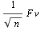
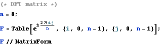
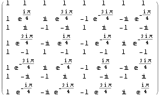
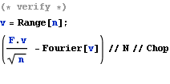
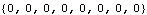
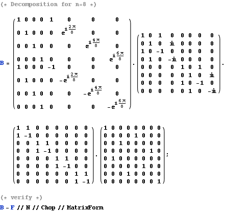
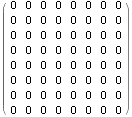

Demonstrate How FFT Works In Matrix Form
The discrete Fourier transform of a vector v is equivalent to 




F can be decomposed into log n+1 sparse matrics. That’s why FFT can be done in O(n log n) computational time.

